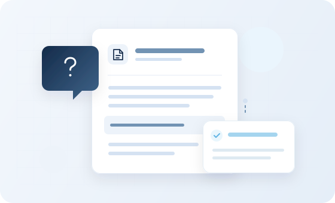

01 / 기업 AI 교육오늘 배운 AI가
오늘 배운 AI가
내일의 업무로 이어지도록
직무별 시나리오로 ChatGPT부터 AI 에이전트·LLM 고급 활용까지. 일하는 방식을 바꾸는 실무 중심 교육입니다.
주요 교육 내용
ChatGPT 기초·직무 활용
생성형 AI 개념과 사용법을 익히고, 직무별 업무 활용을 심화합니다.
AI 에이전트·LLM 심화
업무 처리 흐름을 실습하고, 조직별 AI 활용 역량을 강화합니다.
중소기업 맞춤 교육
조직 규모와 구성원 수준을 고려해 실제 업무 시나리오로 실습합니다.

For company IMAGINATION GROUP ChatGPT
ChatGPT Claude
Claude Copilot
Copilot Solar
Solar